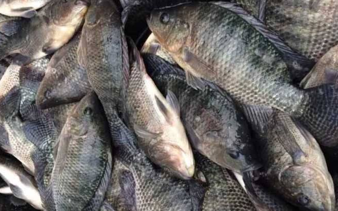

Nile Tilapia (Oreochromis niloticus） has been considered a good model for toxicological in- vestigations of different pollutants owing to its adaptation to adverse environments, and great tolerance to diseases.
Prof. Dr. JianMin Ye
Lead Scientist and Lab Founder
E-mail addresses: jmye@m.scnu.edu.cn, yjmying@126.com